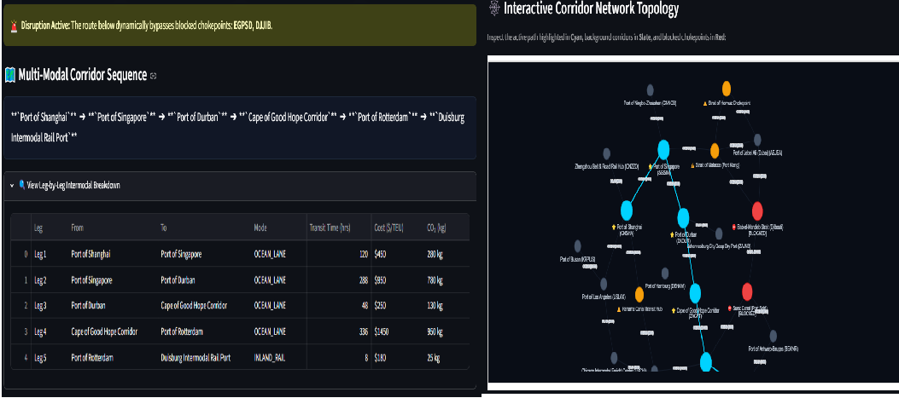

1. The Supply Chain Fragility Reality: Why Relational DBs Fail
Over the past three years, global logistics transitioned from predictable "just-in-time" schedules to continuous, high-stakes crisis management. From missile threats in the Red Sea and Bab-el-Mandeb to drought-induced draft restrictions in the Panama Canal and naval standoffs in the Strait of Hormuz, global supply chain leaders are discovering that legacy ERP systems and relational SQL databases are fundamentally incapable of modeling dynamic trade networks.
In relational databases (RDBMS), trade corridors and customs regulations are stored across siloed tabular rows (ports, routes, tariffs, emissions). Finding an alternative path during an unexpected canal closure requires complex multi-table SQL JOIN operations that degrade in performance and fail to reflect true network topology.
Furthermore, traditional routing software relies on single-metric shortest path algorithms that optimize purely for geometric distance (nautical miles). But in real-world freight forwarding, a Chief Supply Chain Officer (CSCO) cannot route based on distance alone:
- ▶ The Risk & Insurance Penalty: The shortest route through a hostile strait can trigger war-risk insurance premiums that surge freight rates by over 300%.
- ▶ The Scope 3 ESG Constraint: Rerouting around an entire continent adds thousands of nautical miles, spiking container carbon emissions under strict European Union Emissions Trading System (EU ETS) mandates.
- ▶ The Working Capital Drain: Extra days at sea tie up millions of dollars in inventory and risk severe demurrage and detention fees at congested container terminals.
2. Modeling the Multi-Modal Property Graph Schema
In global freight, relationships are not static lines; they are rich, multi-dimensional pipelines. We designed a property graph schema connecting 24 strategic global locations, including Tier-1 container seaports, inland intermodal rail hubs, distribution centers, and critical maritime chokepoints.
│
[:OCEAN_LANE {distance, cost, time, co2, reliability}]
│
▼
(Maritime Chokepoint: Hormuz)
│
▼
(Transshipment Hub: Jebel Ali)
│
▼
(Inland Rail Hub: Duisburg)
The Core Data Model Entities:
- Location Nodes: Seaports (Shanghai, Ningbo, Singapore, Rotterdam, LA, Durban, Santos), Inland Rail Hubs (Duisburg, Chicago, Zhengzhou, Johannesburg), and Chokepoints (Suez, Bab-el-Mandeb, Hormuz, Panama, Malacca, Cape of Good Hope).
- CORRIDOR Edges: Store multi-objective business attributes:
transit_time_hrs(hours),cost_usd_per_teu($/container),co2_kg_per_teu(GLEC carbon intensity),reliability(0.0 to 1.0), andis_chokepoint(Boolean).
3. Multi-Objective Path Traversal in Cypher
Standard routing tools calculate single-metric Dijkstra shortest paths. In GlobalRoute-GraphAI, we execute parameterized Cypher traversals with dynamic reduce() aggregations to simultaneously balance lead time, freight cost ($/TEU), and Scope 3 carbon footprint:
MATCH p = (src:Location {code: $origin})-[r:CORRIDOR*1..6]->(dst:Location {code: $dest}) WHERE NONE(n IN nodes(p) WHERE n.code IN $blocked_chokepoints) WITH p, reduce(t = 0, rel IN relationships(p) | t + rel.transit_time_hrs) AS Total_Hours, reduce(c = 0, rel IN relationships(p) | c + rel.cost_usd_per_teu) AS Total_Cost_USD, reduce(e = 0, rel IN relationships(p) | e + rel.co2_kg_per_teu) AS Total_CO2_KG, reduce(minRel = 1.0, rel IN relationships(p) | CASE WHEN rel.reliability < minRel THEN rel.reliability ELSE minRel END) AS Min_Reliability, [n IN nodes(p) | n.name] AS Path_Sequence, [n IN nodes(p) | n.code] AS Path_Codes RETURN Total_Hours, Total_Cost_USD, Total_CO2_KG, Min_Reliability, Path_Sequence, Path_Codes ORDER BY Total_Hours ASC LIMIT 10;
How Multi-Objective Sorting Functions:
- Fastest Route: Orders paths by
Total_Hours ASCto minimize lead time. - Cheapest Route: Orders paths by
Total_Cost_USD ASCto protect profit margins against spot rate surges. - Greenest Route: Orders paths by
Total_CO2_KG ASCfor corporate ESG compliance. - Highest Reliability: Maximizes
Min_Reliability DESCto avoid high-congestion corridors.
4. Real-Time Crisis Simulation: 4 Geopolitical Scenarios
By isolating compromised nodes on the fly (WHERE NONE(n IN nodes(p) WHERE n.code IN $blocked)), the engine calculates optimal bypasses without re-indexing the database:

Reroutes Asia-to-Europe freight via Cape of Good Hope (+12.5 days, +$1,430/TEU, +950 kg CO₂).
Bypasses Persian Gulf / Jebel Ali via the direct Arabian Sea deep-sea corridor.
Shifts Trans-Pacific cargo to West Coast intermodal rail corridors (LA to Chicago).
Evaluates alternative transshipment paths across Sunda and Lombok corridors.
5. Mathematical Validation & Multi-Leg Step-by-Step Breakdown
For a voyage from Shanghai to Duisburg Rail Port via Cape of Good Hope, the graph compounds across all 5 intermodal legs:
These metrics match empirical market benchmarks from the Drewry World Container Index (WCI), Xeneta, and the Global Logistics Emissions Council (GLEC) framework.
6. Grounding AI: Google Gemini Supply Chain Advisor
Generative AI models are notoriously prone to hallucinating geography, trade agreements, and tariff regulations when querying unstructured text. In GlobalRoute-GraphAI, we implement strict topological grounding.
Before Google Gemini (gemini-3.5-flash-lite) generates a word, our Python engine queries Neo4j and injects the deterministic path facts into a constrained system prompt:
You are an Executive Supply Chain & Maritime Routing AI Advisor. Analyze the following multi-modal freight routing facts retrieved directly from the Neo4j Knowledge Graph. --- RETRIEVED NEO4J KNOWLEDGE GRAPH FACTS --- Origin: Port of Shanghai (CNSHA) Destination: Duisburg Intermodal Rail Port (DEDUI) Active Route: Shanghai ➔ Singapore ➔ Durban ➔ Cape of Good Hope ➔ Rotterdam ➔ Duisburg Total Transit Time: 33.3 Days (800 Hours) | Total Cost: $3,280/TEU | Scope 3 CO2: 2,165 kg/TEU Corridor Reliability: 95.0% Active Disruption: Suez Canal & Red Sea Blocked -------------------------------------------- Write a 3-paragraph Executive Advisory Brief for a Chief Supply Chain Officer: 1. Route Feasibility & Strategic Breakdown (Ocean vs Inland Rail). 2. Risk & Resilience Assessment (Chokepoints traversed or bypassed). 3. Actionable Executive Recommendations (Bunker fuel risk, customs clearance buffers, Scope 3 ESG compliance).
Because Gemini is strictly grounded in graph facts, it produces verifiable, audit-ready executive intelligence without speculative hallucinations.
7. Architectural Comparison: Legacy vs GraphAI
| Capability | Legacy Relational SQL | Vector Search RAG | GlobalRoute-GraphAI |
|---|---|---|---|
| Data Model | Siloed tables | Text chunks | Multi-dimensional property graph |
| Multi-Modal Routing | Slow JOINs | ❌ Cannot traverse paths | ✅ Millisecond Cypher traversals |
| Disruption Simulator | Static tables | ❌ Unsupported | ✅ 4-Scenario dynamic rerouting |
| ESG Carbon Tracking | Manual lookup | Unstructured text | ✅ Automated Scope 3 GLEC footprint |
| Auditability & Accuracy | Hard-coded rules | ⚠️ Risk of hallucination | 🛡️ 100% deterministic path proof |
8. Frequently Asked Questions (FAQ)
Q1: Why use Neo4j for logistics routing instead of standard graph libraries like NetworkX?
NetworkX is an in-memory library best suited for academic analysis on small datasets. Neo4j is an enterprise ACID-compliant graph database that handles billions of nodes and relationships, supports concurrent enterprise queries, provides persistent cloud clustering (Neo4j Aura Cloud), and offers enterprise Graph Data Science (GDS) algorithms optimized for real-time production throughput.
Q2: How does Graph Data Science calculate Scope 3 ESG emissions?
Emissions are calculated per intermodal leg using the GLEC Framework (Global Logistics Emissions Council) standard, taking into account transport mode (container ship vs freight rail vs long-haul truck), distance, average load factors, and fuel type. The graph aggregates total greenhouse gas emissions across all transit legs using Cypher's reduce() function.
Q3: Can this architecture integrate with existing SAP or Oracle SCM systems?
Yes. Modern ERP platforms stream logistics events via REST APIs or Kafka topics. Ingesting these events into Neo4j property graphs allows enterprise teams to build a live digital twin of their supply chain network without replacing their existing transactional systems.
9. Conclusion & Next Steps
Global supply chain resilience is no longer about predicting the future — it is about building dynamic architectures that can adapt to disruption in real-time.
By replacing flat relational tables with a Neo4j Knowledge Graph, logistics leaders gain the power to simulate geopolitical shocks, balance complex financial and ESG trade-offs, and generate explainable, auditable executive briefings with Google Gemini.
By moving from static distance heuristics to multi-objective graph traversals, enterprise teams can finally protect their margins, meet strict decarbonization targets, and maintain continuous supply continuity across an unpredictable global trading landscape.